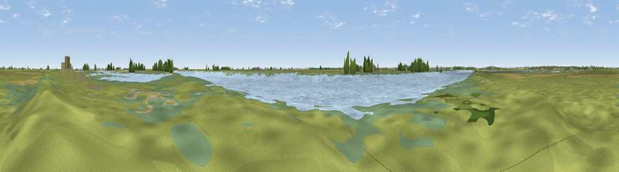

Half Moon Viewpoint
#39484 in England · top 72% of its area beats it · near Paglesham East EndThe view, rendered

A 360° render of this exact spot computed from the terrain model, tree cover and land cover — summer colours, afternoon light, calibrated against photographs of famous viewpoints. Real trees, hedges and buildings will differ in detail.
The panorama
Grey silhouette: terrain skyline in each direction (720 bearings, Earth curvature and refraction included). Dashed green: skyline with trees (+15 m) and buildings (+8 m) as obstacles. Blue strip: how far the ground is visible on each bearing.
Where the view opens
Wedge length = distance to the farthest visible ground on that bearing (vegetation-aware). Rings at 10, 25 and 50 km.
What fills the view
50% water · 30% grassland · 13% wetland · 5% cropland · 1% woodland ·
Angular shares of the visible panorama (visual magnitude), not map area. Landscape diversity 0.53 (0–1 Shannon).
Key numbers
More beautiful places nearby
The staircase of upgrades: each row has a higher view potential than everything closer. Driving times are estimates from straight-line distance, calibrated against real road routing — check an actual route before setting out.
| Place | Direction | Drive | Score |
|---|---|---|---|
| School House Viewpoint | NNE · 2 km | ~4 min | 33.1 |
| Viewpoint near Burnham-on-Crouch | NNW · 2 km | ~6 min | 33.6 |
| Stamfords Hill | NW · 10 km | ~20 min | 54.1 |
| Viewpoint near Hadleigh | WSW · 18 km | ~31 min | 57.4 |
| Viewpoint near Hadleigh | WSW · 18 km | ~32 min | 61.0 |
| Viewpoint near South Benfleet | WSW · 20 km | ~33 min | 62.9 |
| Viewpoint near Thurnham | SSW · 38 km | ~57 min | 63.6 |
| Viewpoint near Boxley | SSW · 38 km | ~57 min | 65.4 |
51.59662, 0.85006 · source: osm viewpoint · position refined by local search. Computed location — check access rights before visiting.